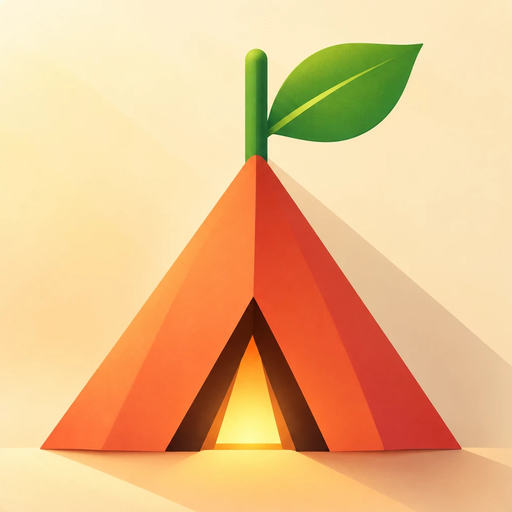
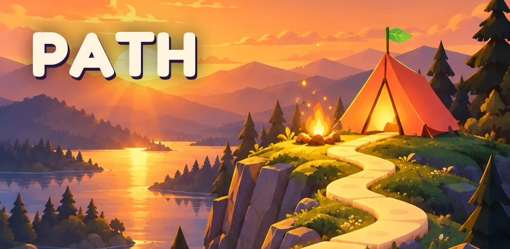

PATH
Sakin Blok Bulmaca · Cozy Block Puzzle

Türkçe
Blokları yerleştir, yolu aç! Her çözdüğün seviye gezginin önündeki yolu açıyor. 1000 seviye, 41 bölüm ve 9 dünya; zaman sınırı yok, internet gerekmez.
English
Place blocks, clear the path! Every level you solve opens the way ahead of your traveller. 1000 levels, 41 chapters and 9 worlds; no timers, no internet needed.